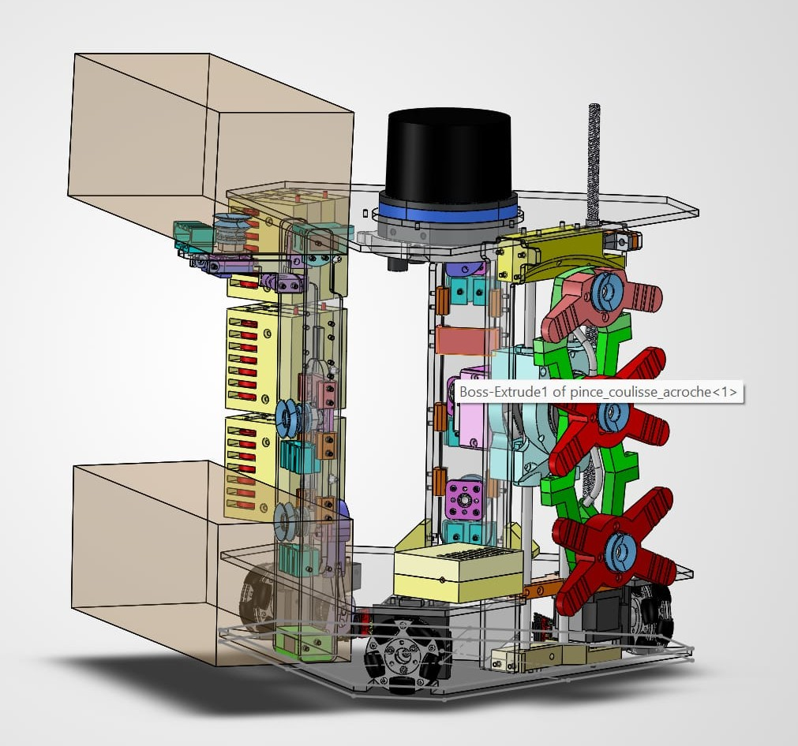

French Robotics Cup (2026 & 2027) & 7Robot Presidency
After joining ENSEEIHT’s robotics club 7Robot in my first year, I became President in May 2026, leading a team of ~20 active members (~€10,500 annual budget), industrial partnerships (Elsys Design, Bootlin, Electroimpact, Dassault Systèmes), weekly SolidWorks & RP2040 training sessions, and the multi-year R2D2 × UNIVERSEH autonomous speaking robot project.
French Robotics Cup 2027 (In progress): Team leadership and full mechanical design of the main robot — T8 lead-screw elevator, pneumatic suction gripper, Venturi ejector, and solenoid valves.
R2D2 × UNIVERSEH (2026 – Present): Coordination of a multi-year life-size autonomous speaking R2D2 robot funded by UNIVERSEH and Toulouse INP.
Main Robot 2027 — Holonomic Chassis, T8 Elevator & Vacuum Gripper
As President of 7Robot and mechanical designer for the 2027 edition, I am designing and prototyping the main holonomic robot: a 3-wheel omnidirectional base with central LiDAR, a T8 lead-screw linear elevator with a rotating actuator hub, and a 3-level pneumatic suction-cup gripping system powered by compact integrated pump/solenoid-valve modules.

Full SolidWorks 3D CAD assembly (holonomic base, LiDAR, T8 elevator & 3-level gripper)
French Robotics Cup 2026 · 7Robot · Sept 2025 – May 2026
“PAMI Ninja” — Autonomous Secondary Robot
As mechanical lead for our autonomous secondary robot (Petit Actionneur Mobile Indépendant), I designed the complete mechanical structure, the central rack-and-pinion linear elevator rail, and the dual vacuum suction gripper, working closely with the electronics and software teams to integrate our custom circular 7Robot PCB.
Competition Result: Qualified 8th out of 108 homologated teams (peak score of 124 points in a match) and reached the Round of 16.
Engineering Internship · LAERO / OMP / CNRS · June – July 2026
Multi-Sensor Environmental Measurement Platform
During my 8-week engineering internship at the Laboratoire d’Aérologie (LAERO — OMP / CNRS) in Toulouse, I developed an autonomous embedded environmental station designed for field atmospheric measurements.
Designed the schematic and routed a custom PCB in KiCad interfacing multiple environmental sensors with an Arduino architecture.
Implemented embedded acquisition firmware and analyzed sensor responses.
Modeled and integrated the protective mechanical enclosure in SolidWorks, delivering a complete working prototype to the lab.
As part of my Supervised Personal Work Project (TIPE) in classe préparatoire, I designed a physical Rubik’s Cube solver combining multi-language software, embedded power electronics, and custom mechanics:
Python: Graphical user interface (GUI) to input the initial color state of the cube.
OCaml: Algebraic data model of the cube and full Fridrich (CFOP) solving algorithm (Cross, F2L, OLL, PLL).
Arduino (C/C++) & Mechanics: Stepper motor control through power drivers (12V/24V), custom frame modeled in Fusion 360, and mechanically modified Rubik’s Cube shafts.
Result: Complete physical resolution of a scrambled Rubik’s Cube in 6 to 7 seconds.
In a team of four, we designed and experimentally validated a complete biomedical photoplethysmography (PPG) acquisition chain — the optical principle used in smartwatches to measure heart rate without an ECG.
Optical & Analog Front-End: LED emitter and photodiode receiver, analog amplification (gain 4.73 / 13.5 dB, buffer and differential pair), and analog filtering validated against circuit simulations.
Conversion & DSP: Sample-and-hold + ADC stage followed by digital signal processing in MATLAB/Python (resampling, heart rate extraction, pulse wave velocity, and acceleration plethysmogram for vascular age estimation).
Analog ElectronicsCircuit SimulationADC / InstrumentationMATLABPython DSP
5th Semester · ENSEEIHT
“Snake” Game in C
To master the C programming language, we were offered a project: coding the "snake" game in C with CodeBlocks.